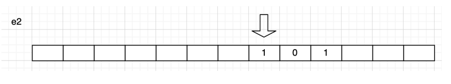
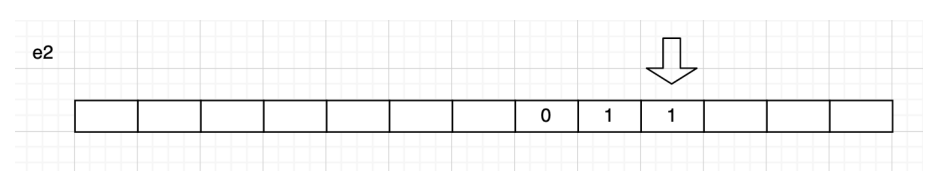

Décidabilité et calculabilité#
Quelques repères historiques#
- Wilhelm Schickard (1592 – 1635) , professeur à l’Université de Tübingen (Allemagne), aurait dessiné les plans de la première machine à calculer (mécanique). Cette machine n’a pas été construite.
- Blaise Pascal (1623 – 1662) , mathématicien et philosophe, construit à l’âge de 19 ans la Pascaline, première machine à calculer opérationnelle du XVIIè siècle .
- Gottfried Wilhelm Leibniz (1646 – 1716), mathématicien et philosophe, développe aussi une machine à calculer. Il préconise des idées très modernes : la machine de calcul universelle, le schéma “entrée*calculsortie”, la base 2 pour la représentation des nombres.
- Le métier à tisser de Joseph Marie Jacquard (1752 – 1834) est basé sur l’utilisation de cartes perforées, et est à l’origine des premiers programmes de calcul.
- Charles Babbage (1791 – 1871), professeur à Cambridge, construit la machine différentielle et imagine les plans de la machine analytique (machine programmable). La dernière peut être considérée comme précurseur des ordinateurs modernes, consistant d’une unité de contrôle, une unité de calcul, une mémoire, ainsi que l’entrée*sortie.
- Ada Lovelace (1815 * 1852) , est une pionnière de la science informatique. Elle est principalement connue pour avoir réalisé le premier véritable programme informatique, lors de son travail sur un ancêtre de l’ordinateur : la machine analytique de Charles Babbage. Dans ses notes, on trouve en effet le premier programme publié, destiné à être exécuté par une machine, ce qui fait considérer Ada Lovelace comme le premier programmeur du monde. Elle a également entrevu et décrit certaines possibilités offertes par les calculateurs universels, allant bien au*delà du calcul numérique et de ce qu’imaginaient Babbage et ses contemporains. Elle est assez connue dans les pays anglo-saxons et en Allemagne, notamment dans les milieux féministes ; elle est moins connue en France, mais de nombreux développeurs connaissent le langage Ada, nommé en son honneur.

- David Hilbert (1862 – 1943) , mathématicien allemand. En 1900, Hilbert propose 23 problèmes dont certains ne sont pas résolus à ce jour. Pour voir la liste des problèmes. Il présente en 1920 un programme de recherche visant à clarifier les fondements des mathématiques : “tout énoncé mathématique peut être soit prouvé ou réfuté”. Plus tard il énonce le “Entscheidungsproblem” : montrer de façon “mécanique” si un énoncé mathématique est vrai ou faux. Il faudra attendre 1936 pour qu’Alan Turing s’intéresse au problème n°10 avec Church (dont il était le doctorant). Ils définissent rigoureusement la notion d’algorithme.
- Kurt Gödel (1906 – 1978) , un des logiciens les plus fameux de l’histoire, répond en 1931 négativement quant au programme proposé par Hilbert, en montrant que tout système formel suffisamment puissant est soit incomplet ou incohérent. Il montre ceci en construisant une formule qui exprime le fait qu’elle n’est pas démontrable.
- Alan Turing (1912 – 1954) et Alonzo Church (1903 – 1995) montrent indépendamment, en 1936, l’indécidabilité de l’Entscheidungsproblem. Turing propose "la machine de Turing" comme modèle mathématique de calcul, et Church le lambda calcul. Ils énoncent le principe selon lequel tout ce qui est calculable peut être calculé sur un de ces deux modèles (“thèse de Church*Turing”). La Machine de Turing est inventée pour répondre au problème mathématiques de la décidabilité proposé par Hilbert. Une machine de Turing a pour but de décrire les algorithmes. Il faut savoir que Turing ne verra pas de son vivant une réalisation concrète de sa "machine".

Pour plus d’information sur la vie d’Alan Turing, voir cette vidéo.
Machine de Turing#
Définition#
Il s’agit d’une machine imaginaire inventée par Alan Turing en 1936 pour expliquer la notion de "procédure mécanique" : l’équivalent d’un algorithme. Cette machine est la plus élémentaire possible destinée à mettre en œuvre ces mécanismes de calcul, numériques ou symboliques, comme le font notamment les ordinateurs.
Une machine de Turing est un appareil disposant :
- d’un ruban infiniment long divisé en cases, dans lesquels la machine peut écrire des symboles ;
- une tête qui peut lire et écrire sur ce ruban ;
- une table de transition. Chacune des lignes de cette table est associée à un état et spécifie les actions à effectuer quand la machine est dans cet état, en fonction du symbole présent sous la tête de lecture. Ces actions peuvent être l’écriture d’un symbole (ici un 0 ou un 1) et le déplacement du ruban d’une case à droite ou à gauche. La table spécifie également le nouvel état après exécution de ces actions. La machine s’arrête quand un état marqué comme final est atteint.
Cette machine fonctionne comme une machine à calculer en binaire. Turing envisage le cas particulier où les symboles utilisés sont 0 et 1.
L’entrée du programme est un liste de symboles binaires. Une fois effectué, c’est sur ce même ruban que sera écrit la sortie du programme.
Remarque : En 2012, pour célébrer le centenaire de la naissance d’Alan Turing, huit étudiant en master de l’École Normale Supérieure (ENS) de Lyon ont fabriqué en LEGO la première machine réelle (purement mécanique) du modèle de Turing. En voici le lien : http://rubens.ens-lyon.fr/fr/
Exemple#
La machine peut être dans deux états e1 et e2. Si la machine est dans l’état e1 et contient un blanc, elle écrit un blanc. Le rubanc se déplace vers la gauche et la machine est dans l’état e2. Si la machine est dans l’état e2 et qu’elle lit un 0, elle écrit un 1 et si elle lit un 1 elle écrit un 0. Dans les deux cas, le ruban se déplace vers la gauche et la machine reste dans l’état e2. Enfin, si elle lit un blanc, elle écrit un blanc et la machine s’arrête.
Ce qui nous donne la table de transition suivante :
Les étapes successives sont représentées ci-dessous. Initialement la machine se trouve dans l’état e1.
La machine lit un blanc, passe dans l’état e2 et le ruban se déplace vers la gauche.

La machine lit un 1, donc écrit un 0, reste dans l’état e2 et ruban se déplace vers la gauche

La machine lit un 0, donc écrit un 1, reste dans l’état e2 et le ruban se déplace vers la gauche.

La machine lit un 1 donc écrit un 0, reste toujours dans l’état e2 et le ruban se déplace vers la gauche.

La machine lit un blanc, écrit un blanc, le ruban se déplace encore vers la gauche et la machine s’arrête.

Remarque 2 : Un émulateur de cette machine de Turing sur ce site.
Diagramme#
On peut construire un diagramme de la machine (on parle aussi d’automate). Pour définir un diagramme, il faut :
- un alphabet utilisé par la machine (liste des caractères utilisés). Exemple ’0’,’1’,’b’.
- des états sont symbolisés par des cercles et écrits sous la forme e1, e2, etc (ou encore q1, q2, etc).
- un état final représenté par ef (ou qf) mais parfois indiqué par une chaine de caractères ou un caractère particulier ("final").
- représenter les déplacements par les lettres L et R (left et right).
- utiliser des triplets (lecture ; écriture ; déplacement) et des flèches qui indiquent l’état suivant.
Exemple 1 :
Liste des caractères possiblement présents sur le ruban {0;1;b}
- A l’état e1, si la tête lit un 0 alors elle écrit 1, se déplace à droite et reste à l’état e1.
- A l’état e1, si la tête lit un 1 alors elle écrit 0, se déplace à droite et reste à l’état e1.
- A l’état e1, si la tête lit un blanc alors elle n’écrit rien et passe à l’état ef (elle s’arrête).
Ce qui nous donne la table de transition suivante :
Et donc le diagramme suivant :

Exemple 2 :
Liste des caractères possiblement présents sur le ruban {0,0,b}
- si la tête lit un blanc alors elle n’écrit rien et se déplace à droite en restant à l’état e0.
- A l’état e0, si la tête lit un 0 alors elle n’écrit rien, ne se déplace pas et passe à l’état e1.
- A l’état e0, si la tête lit un 1 alors elle n’écrit rien, ne se déplace pas et passe à l’état e1.
- A l’état e1, si la tête lit un 0 alors elle écrit 1, se déplace à droite et reste à l’état e1.
- A l’état e1, si la tête lit un 1 alors elle écrit 0, se déplace à droite et reste à l’état e1.
Ce qui nous donne la table de transition suivante :
Et donc le diagramme suivant :

Décidabilité et calculabilité#
Calculabilité#
Une fonction calculable est une fonction que l’on peut écrire sous forme d’algorithme.
Les machines de Turing sont une réponse à la recherche de définition d’une fonction calculable. C’est la thèse de Church : "Toute fonction physiquement calculable est calculable par une machine de Turing".
Fonctions non-calculables : contrairement à ce que l’on pourrait imaginer, il existe des fonctions qui ne sont pas calculables. Il y en a même une infinité.
Remarque : La calculabilité ne dépend pas du langage utilisé.
Si une fonction est calculable, il existe un algorithme dans le langage que vous utilisez qui permet de la calculer.
Décidabilité#
Une propriété est décidable si l'on peut déterminer en un nombre fini d'étapes si elle est vraie ou fausse quel que soit le contexte de départ. (On parle de problème de décision, à réponse oui ou non) Attention, cela ne veut pas dire que la propriété doit être toujours fausse ou vraie.
Donnons, pour illustrer la définition, quelques exemples.
- Savoir si un nombre est premier est décidable. La réponse sera soit 'vrai', soit 'faux' et un algorithme simple est de diviser ce nombre par les entiers inférieurs à lui même. Il y a donc un nombre fini d'étapes et une réponse qui est soit vrai soit faux.
- Dire si un nombre est pair (on regarde le reste de la division Euclidienne par 2)
- Les exemples ne manquent pas. On peut alors se poser la question: "tout est-il décidable?". La réponse est non. Si c'était le cas, cela voudrait dire que l'on pourrait prouver qu'une propriété mathématique est vraie ou fausse avec un algorithme !
Donnons des exemples de problèmes non décidables. Je parcours un réseau aléatoirement, est-ce que je vais atteindre une cible données en un nombre fini d'étapes? Pas forcément, même si la probabilité d'arriver à destination tend vers 1 quand le nombre d'étapes tend vers l'infini!
Un autre exemple plus connu: le problème de l'arrêt d'un programme est-il décidable? Est-ce que je peux écrire un programme qui me dira si un programme va s'arrêter ou non (selon les valeurs d'entrées)? Nous verrons que l'on peut prouver que ce problème n'est pas décidable: il n'existe pas d'algorihtme capable de prédire si n'importe quel programme va s'arrêter ou non.
Problème de l'arrêt#
Il nous est arrivé à tous d’écrire une boucle infinie. C’est le drame car notre programme ne s’arrête jamais.
A l’échelle de l’industrie ce problème devient un problème essentiel. Pensez aux problèmes de sécurité (centrale nucléaire, aviation, transports, etc).
Le problème de l’arrêt est un problème classique en décidabilité. Il fait partie des problèmes qui n’ont pas de solution. Autrement dit, il est impossible d’écrire un algorithme qui résout ce problème. La plupart des autres problèmes indécidables reviennent à ce problème.
Pour démontrer que le problème de l'arrêt est indécidable , nous allons utiliser le raisonnement par l'absurde. Le raisonnement par l'absurde, suppose vrai ce que l'on veut établir comme faux. Par un raisonnement logique on doit aboutir à une contradiction qui établit que ce que l'on a supposé comme vrai...est forcément faux.
Amusons nous avec un peu de logique. Si je vous dis "je mens"...vous avez un soucis!
Si je suis effectivement un menteur, alors l'affirmation "je mens" est fausse...donc je ne mens pas ?
Si je ne suis pas un menteur, alors je mens en disant que je suis un menteur, je suis donc un menteur ?
Dans les deux cas...l'affirmation est absurde, affirmer "je suis un menteur", n'est pas une assertion logique.
Passons maintenant à la preuve du problème de l'arrêt.
Supposons que l'on peut écrire un programme arret(code du programme, paramètre), capable de dire si le programme 'code du programme' va s'arrêter dans tous les cas ou non si il existe des cas où il ne s'arrête pas.
Ecrivons un programme: absurde(code du programme)
absurde(code d'un programme):
si arret(code du programme,code du programme):
faire une boucle infinie ici
sinon
arreter le programme
Utilisons ce programme absurde en envoyant comme 'code d'un programme', le programme absurde lui même, on lance donc absurde(absurde).
si Arret(absurde,absurde) s'arrete, cela indique que absurde(absurde) s'arrête et donc le programme absurde(absurde) entre dans une boucle infinie. Il y a contradiction
si Arret(absurde,absurde) ne s'arrete pas, cela indique que absurde(absurde) ne s'arrête et donc le programme absurde(absurde) s'arrête. Il y a contradiction.
Dans tous les cas, on aboutit à une contradiction, cela implique que le programme absurde ne peut pas exister et que par conséquent, une telle fonction arret ne peut exister.
Conclusion :
Il ne peut pas exister de programme universel qui prendrait en entrées :
- un programme P
- une entrée E de ce programme P
et qui déterminerait si ce programme P, lancé avec l'entrée E, va s'arrêter ou non.